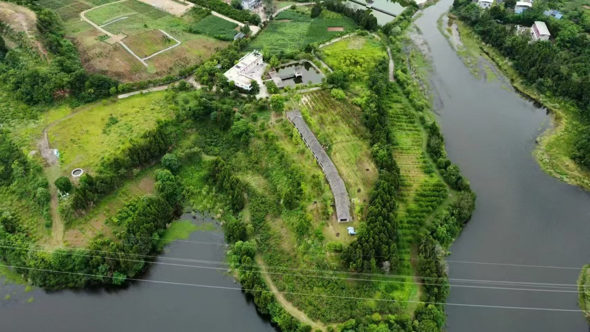

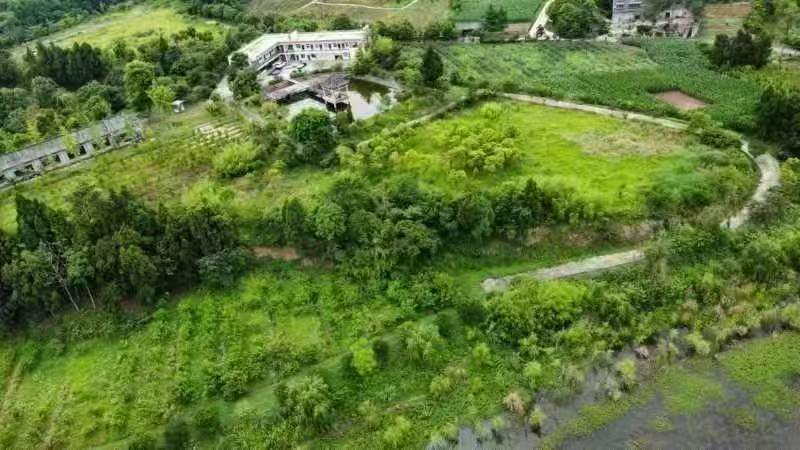

- 距阆中古城
- 7公里
- 环抱三八水库
- 3面
- 承包期至
- 2060年
- 现有主楼与长廊
- 约2000㎡
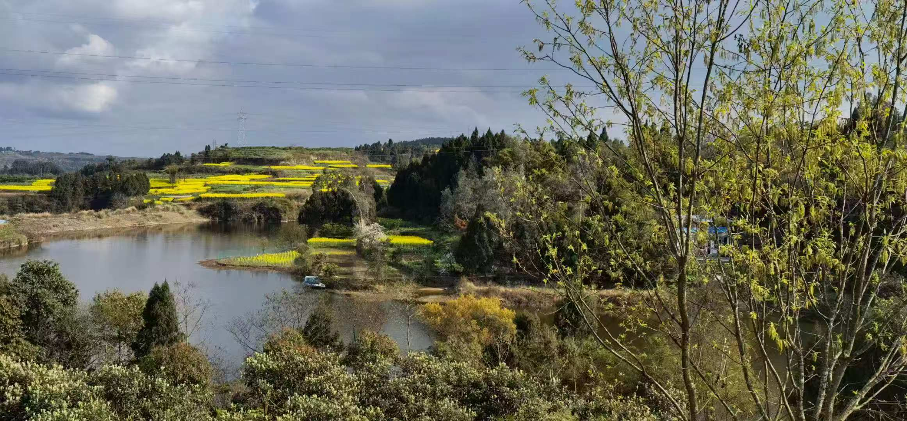
壹这块地
山脊伸进水库
地形象一道鱼背，北、南、西三面是三八水库，高差大约二十米。蓝莓和龙泉的果树是二零一二、二零一三前后种的，已经挂果。进园的硬化路大约两公里半，水、电、通讯已经接到。
承包期到二零六零年。入股、合作开发，或由合作方接着做，都可以谈。
壹旁边的城
古城在七公里外
阆中是一座两千三百年的城，嘉陵江从旁边过。山围四面，水绕三方，城里的人把它叫做风水古城。张飞庙、贡院、状元坊，还有落下闳和春节的来处，都在这城里。
城是这块地的邻居，也是外地人最先认得的一张名片。借不借古城的名，由合作的人定。
贰现状
地上已经有的
路、屋、水、田，都是现在走得到的。
-
路
从康美大道转入乡路，硬化进园路大约两公里半，水、电、通讯已经接到。
-
屋
管理用房大约一千二百平方米，仿古长廊大约八百平方米，另有一座观景亭。主楼、长廊和门前的池塘都在坡上。
-
水
三八水库围着山脊。园里原有三口钓鱼池、两处塘堰。水是这块地最清楚的条件。
-
田
蓝莓和龙泉的果树已经挂果。近处还有汉王祠和玉皇观旧址。
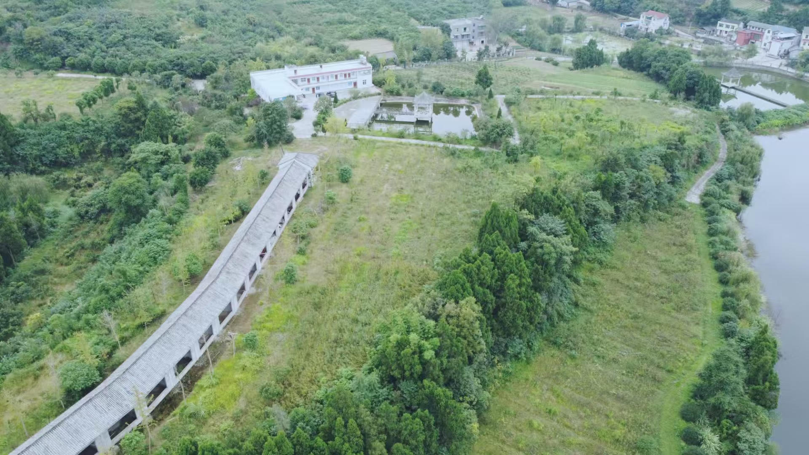
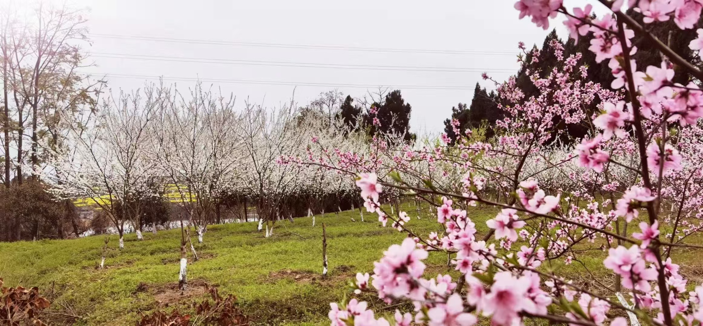
水入画中，画落梦中。
叁可能
这块地容得下的
主楼、果园和水面已经在。顺着它们，这块地可以长出住、食、园、水四样。做成什么样，由合作的人定。
-
住
坡上已有主楼和长廊。沿山脊还可以再长出住处，做成酒店、民宿，或少量的院子。
-
食
水库、果园和田都在门口。餐馆、农家饭、一场宴席，都容得下。
-
园
山脊、花和果树是现成的景色。可以做成让人走进去的公园，也可以留下大片不建。
-
水
三八水库围着山脊，从空中看像一条弯过来的河。垂钓是现成的，划船和水上活动可在取得水面许可后展开。
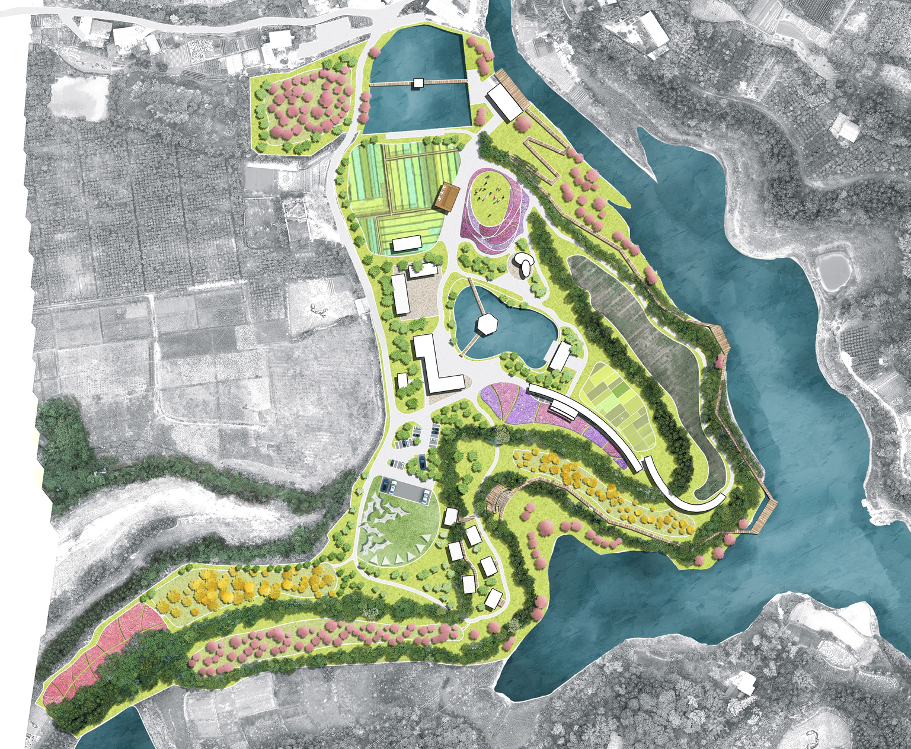
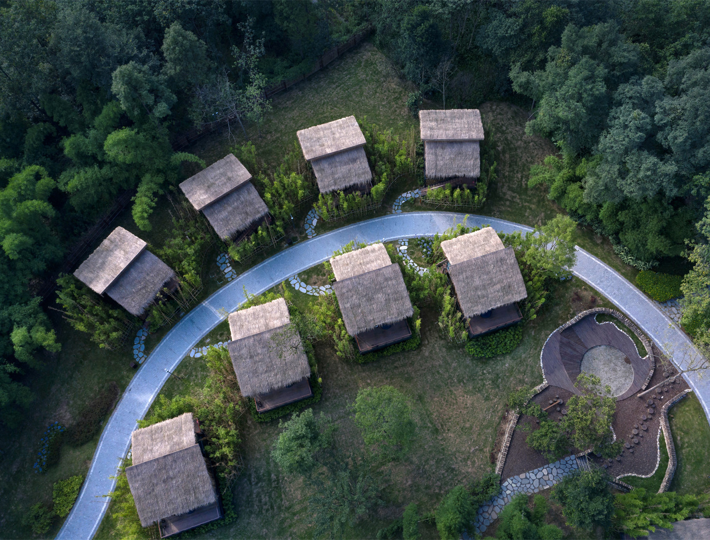
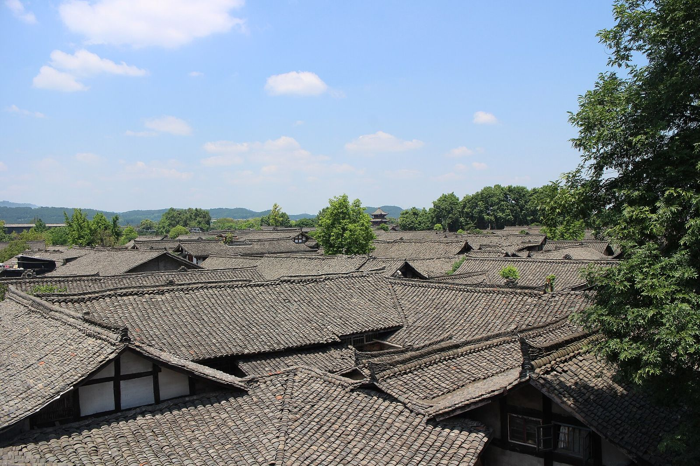
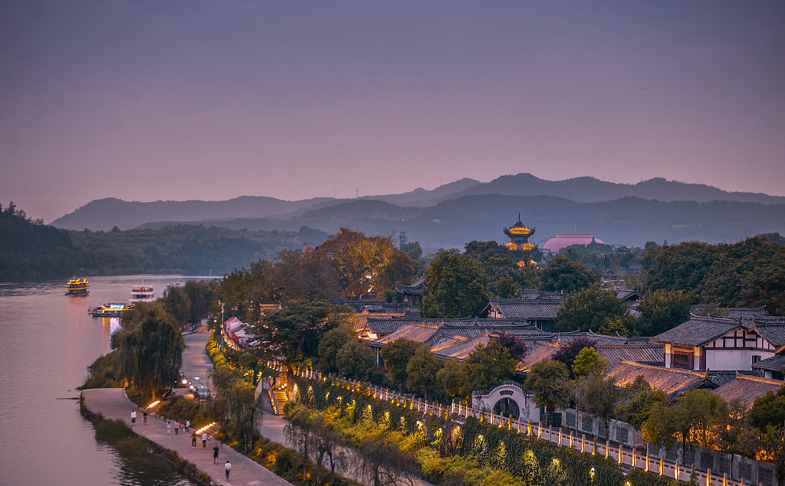
外面记得这座城，常常是这几件事。
-
风水古城
城跟着山水走，四面有山，三面有水。当地叫它风水古城，也叫阆苑。这是最容易讲给外地人听的一句。
-
贡院还在
川北道贡院是科举时主考和考生用的地方，考棚至今还在城里，是全国重点文物保护单位。
-
状元坊
坊上写着尹家和陈家。唐代尹枢、尹极兄弟先后中状元。北宋陈尧叟、陈尧佐、陈尧咨，两人文状元，一人武状元。当地说，四川的状元这里出得最多。
-
春节的日子
阆中人落下闳做太初历，汉武帝用了它，把正月初一定成一年的开始。阆中也因此被称作春节文化之乡。
-
张飞在这里驻过
张飞镇守阆中七年，桓侯祠至今还在城里。三国这一段，是外地人认得的另一张名片。
-
手上还在做的
保宁醋、张飞牛肉、川北王皮影、阆中丝毯，都是这座城自己的名字，至今还有人在做。
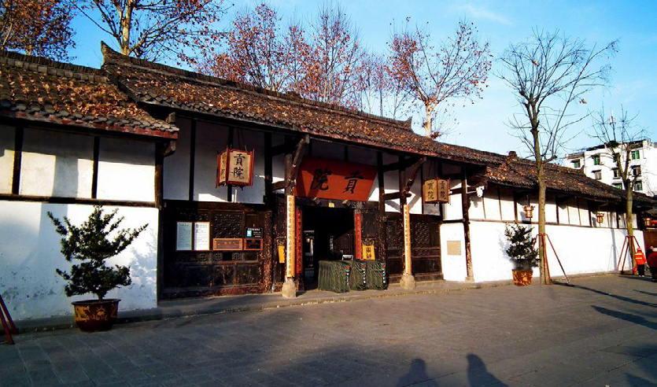
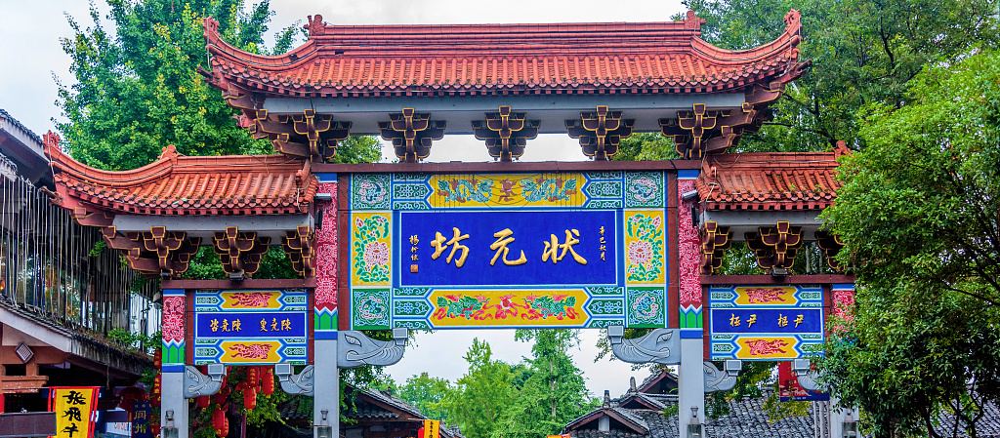
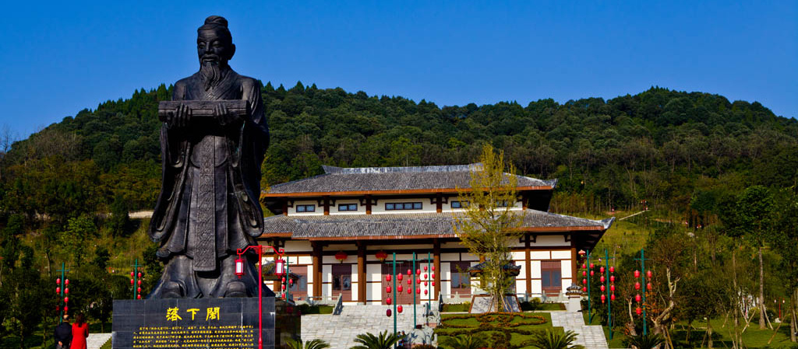
伍合作
怎么一起做
- 面积 · 待填
- 合作方式 · 待填
亩数，以及是入股、合作开发还是接手，业主确认后写在这里。

带资进来
可以谈入股，也可以谈并购，由合作的人接着做。出资和股份，见面详谈。
用法自定
手里有过几版规划，从农庄到田园综合体，都可以作底稿。这块地怎么用，由合作的人按自己的想法来定。
先谈
在微信里搜索下面这个号。电话和二维码业主补上之后，放在这里。
微信 · wxid_cc6adi092eg922
电话 · 待填
二维码 · 待填
陆看地
先来看地
地图即将放上
精确落点要业主在地图上点一下。
从康美大道转入去杨家沟的乡村路，最后一段是乡间小路。自己开车，或从古城约一辆车，比较稳妥。
- 广元、巴中、南充
- 自驾大约一个小时
- 绵阳
- 自驾大约两个半小时
- 成都
- 自驾大约三个小时
- 重庆
- 自驾大约三个半小时
来看地请先联系业主。车程为约数。